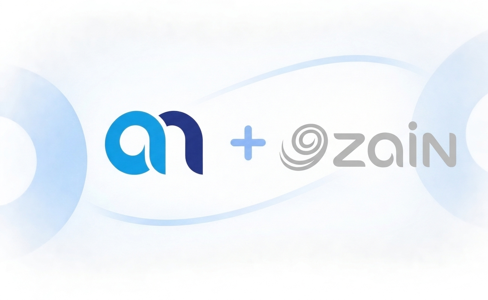

News · August 25, 2026 · by OpenAN

The OpenAN community is pleased to announce that Zain Kuwait has joined the project as an ecosystem participant — the first Middle East operator to join the community. The move marks another step in the global growth of open, agent-driven autonomous networking.
Zain Kuwait is the flagship operation of Zain Group, one of the leading mobile telecommunications groups in the Middle East and Africa, serving tens of millions of customers across the region. A pioneer of mobile connectivity in the Gulf and an early mover in 5G, Zain Kuwait pairs network ambition with a strong track record of digital innovation — from next-generation consumer services to enterprise ICT.
Zain Kuwait's participation extends OpenAN's footprint into one of the world's most dynamic telecom markets, grounding agent-driven autonomous networking in real operator requirements and bringing the ecosystem's work closer to live networks across the region.
Follow the GitHub repositories and the project website for the latest updates.